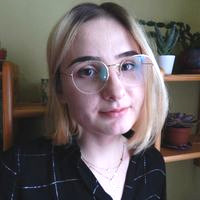

Team

Karolina Finc, PhD
I am interested in plasticity and dynamics of the
human brain during cognitive processes and learning.
I apply tools from network neuroscience to
understand the human brain reorganization.

Kamil Bonna, MSc
My research focuses on the brain mechanisms
underlying human decision making. Specifically, I am
interested in linking reinforcement learning
algorithms with brain connectivity.

Mateusz Chojnowski, BSc
Jack of all trades master of none, with broad areas
of interests. I willingly take part in projects from
various fields e.g. neuroinformatics, game
development or deep learning.

Iga Adamska, student
I am interested in analysis of different states of
brain activity. I just started my adventure with
data analysis and programming.

Paweł Drojecki, student
I have broad interests in cognitive and computer
science and I want to combine them. I plan to use
eye-tracking to study reinforcement learning in
humans.
Jan Bendyk, student
Driven by philosophical and ethical questions about AI,
I want to explore it in a practical way.
I am especially interested in the neuroscientific roots of the subject.
Zosia Piętka-Danilewicz, student
My interests are strongly related to functional connectivity analysis.
I look forward to expanding my knowledge in other areas of neuroscience.
Weronika Sójka, student
My interests focus on brain function, neuropsychology, and learning processes.
I am trying to use every possibility to explore more and more about cognitive science,
especially in these areas.

Julia Zasada, student
I am at the beginning of the adventure with neuroscience.
I am especially interested in states of brain activity during rest and sleep,
anthropology and philosophy.